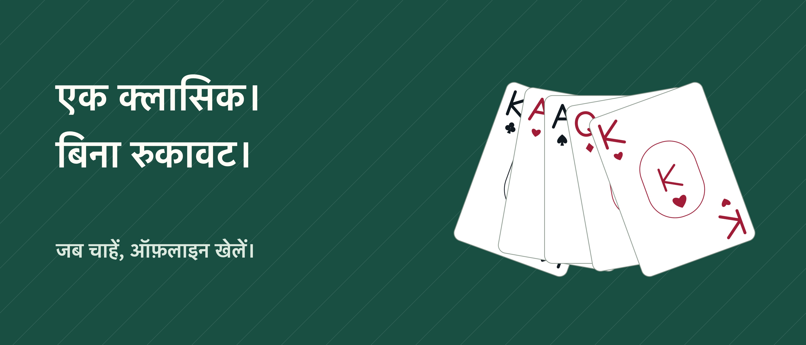

सॉलिटेयर Unbound

एक-एक पत्ते के साथ, कुछ समय अपने लिए।
पत्तों के साथ अपना समय, बिना रुकावट। 1 या 3 पत्ते निकालने वाला क्लोंडाइक खेलें—बिना विज्ञापन, IFG खाते या सदस्यता के।
चाल वापस लें और फिर कोशिश करें चाल वापस लेना, दोहराना और मान्य चालों के संकेत मुफ़्त हैं। पत्ते खींचें या पत्ते और फिर उसकी जगह पर टैप करें। आराम मोड समय छिपाता है; क्लासिक मोड समय और चालें दिखाता है।
जब चाहें, जारी रखें सहेजी गई बाज़ियाँ और आँकड़े डिवाइस पर रहते हैं। रैंडम बाज़ी या सत्यापित हल वाला शुरुआती क्रम चुनें और दैनिक चुनौती खेलें। हर रैंडम बाज़ी का हल होना ज़रूरी नहीं है। सत्यापित शुरुआती क्रम में भी आपकी चालों से बाज़ी अटक सकती है।
Pro के साथ और तरीके एक बार की खरीद से फ्रीसेल, 1, 2 और 4 सूट वाला स्पाइडर, चुनौतियों का संग्रह और अतिरिक्त रूप मिलते हैं: कुल छह मेज़ें, पत्तों की छह पीठें और तीन चेहरे। संकेत खरीदने या खर्च करने की ज़रूरत नहीं है।
खेल ऑफ़लाइन चलता है। Pro खरीदने या बहाल करने के लिए इंटरनेट और Apple खाते की ज़रूरत हो सकती है। प्रगति दूसरे डिवाइस से सिंक नहीं होती और ऐप हटाने पर मिट सकती है। Pro बहाल करने से मिटाई गई प्रगति वापस नहीं आती।